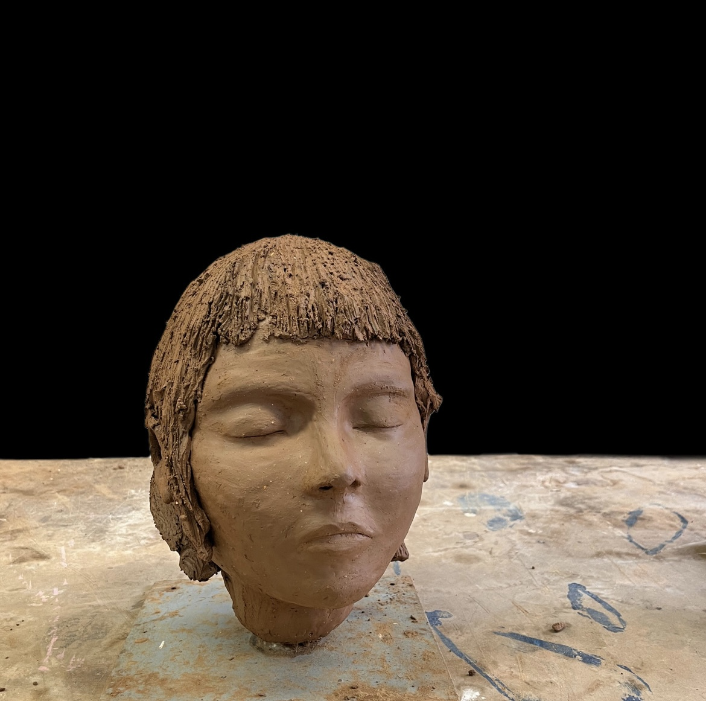
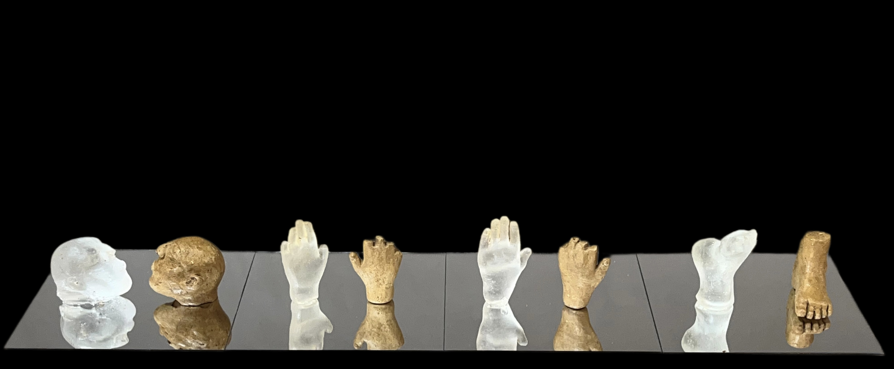

Fragmentos
El pie, soporte de movimiento, condensa gran parte del gesto del cuerpo en su simpleza. En estos moldes, el gesto se convierte en un registro material, revelando la tensión entre lo efímero del movimiento y la permanencia del yeso.

Diapositivas
Imágenes creadas con maquillaje en un soporte transparente.

Tomando 11
Trabajo en proceso. Tazas hechas en base de servilleta, para representar la fragilidad que sentía en la mesa de mi casa.